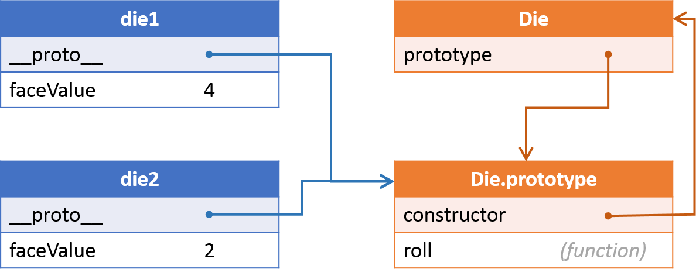

class: center, middle, lnu-background-yellow ### Grundläggande programmering (1DV021) # Föreläsnig 6 <div class="lnu-footer"> <img src="../remark/images/lnu-logotype.png"> <img src="../remark/images/lnu-symbol.png"> </div> --- class: lnu-background-cc ### Upphovsrätt för detta verk Detta verk är framtaget av Mats Loock i anslutning till kursen Grundläggande programmering (1DV021) vid Linnéuniversitetet. Allt innehåll i detta verk förutom fotografier, ikoner, bild på kurslitteraturen samt Linnéuniversitetets logotyp och symbol, är licensierad under en <a rel="license" href="http://creativecommons.org/licenses/by/4.0/"> <img alt="Creative Commons-licens" style="border-width:0;vertical-align:middle" src="https://i.creativecommons.org/l/by/4.0/80x15.png" /> Creative Commons Erkännande 4.0 Internationell Licens </a>. #### Du får använda detta verk så här - kopiera hela eller delar av innehållet - sprida hela eller delar av innehållet - visa hela eller delar av innehållet offentligt och digitalt - konvertera innehållet till annat format - du får även göra om innehållet Om du förändrar innehållet så ta inte med fotografier, ikoner, bild på kurslitteraturen samt Linnéuniversitetets logotyp och symbol i din nya version! Vid all användning måste du ange källan: ”Linnéuniversitetet – Grundläggande programmering (1DV021)” och en länk till https://coursepress.lnu.se/kurs/grundlaggande-programmering och till Creative Common-licensen här ovan. --- # Relationer mellan konstruktor, prototyp och objekt <pre style="float:left;width: 54%;"><code class="js"> function Die() { this.faceValue; } Die.prototype.roll = function() { this.faceValue = Math.floor(Math.random() * 6) + 1; }; let die1 = new Die(); let die2 = new Die(); die1.roll(); die2.roll(); </code></pre>  <div style="clear: both;"></div> - När en konstruktorfunktion skapas skapas även en tillhörande prototyp, som är ett objekt bl.a. innehållande en referens, `constructor`, till konstruktorfunktionen samt egenskaper och metoder gemensamma för alla instanser av typen. - Varje instans har en referens, `__proto__`, till konstruktorns prototyp. --- # ES2015 och syntaktiska sockret `class` ``` function Die() { this.faceValue; } Die.prototype.roll = function() { this.faceValue = Math.floor(Math.random() * 6) + 1; }; let die1 = new Die(); let die2 = new Die(); die1.roll(); die2.roll(); console.log(die1.faceValue); console.log(die2.faceValue); ``` ``` class Die { constructor() { this.faceValue = undefined; } roll() { this.faceValue = Math.floor(Math.random() * 6) + 1; } } let die1 = new Die(); let die2 = new Die(); die1.roll(); die2.roll(); console.log(die1.faceValue); console.log(die2.faceValue); ``` --- # Problem med publika egenskaper ``` function Die() { this.faceValue; } Die.prototype.roll = function() { this.faceValue = Math.floor(Math.random() * 6) + 1; }; let die1 = new Die(); let die2 = new Die(); // Inte några värden en sexsidig tärning ska ha... die1.faceValue = 42; die2.faceValue = 'Kilroy was here!'; ``` - En publik egenskap kan sättas till vilket värde som helst. - LÖSNING: datat, egenskapen `faceValue`, ska kapslas in och döljas. --- # Privata medlemmar - Privata medlemmar kallas egenskaper och metoder som inte kan kommas åt utanför konstruktorfunktionen. - Privata medlemmar skapas av konstruktorn. - Konstruktorns parametrar. - Medlemmar definierade med let (eller var, eller const). ``` function Foo(param) { this.param = param; // "publik" this._notSoPrivate; // "publik" MEN "semi-privat" genom namngivning (namn inleds med _) let secret = 42; // "privat" let bar = function() { // "privat" return 'forty-two'; }; } ``` - "Getters" och "setters" krävs för åtkomst av privata egenskaper. --- # En privat tärning - Genom att använda `Object.defineProperty` kan du ange den funktion som ska köras då en egenskaps värde hämtas respektive tilldelas ett värde. ``` function Die() { let _faceValue; Object.defineProperty(this, 'faceValue', { get: function() { return _faceValue; }, set: function(value) { const intValue = parseInt(value, 10); if (isNaN(intValue) || intValue < 1 || intValue > 6) { throw new Error('faceValue must be an integer between 1 and 6.'); } _faceValue = intValue; } }); } Die.prototype.roll = function() { this.faceValue = Math.floor(Math.random() * 6) + 1; }; let die1 = new Die(); let die2 = new Die(); die1.roll(); die2.roll(); console.log(die1.faceValue); console.log(die2.faceValue); die1.faceValue = 42; // ett undantag kastas ``` --- # En semi-privat tärning med klass ``` class Die { constructor() { this._faceValue = undefined; } get faceValue() { return this._faceValue; } set faceValue(value) { const numberValue = Number(value); if (!Number.isInteger(numberValue) || numberValue < 1 || numberValue > 6) { throw new Error('faceValue must be an integer between 1 and 6.'); } this._faceValue = value; } roll() { this.faceValue = Math.floor(Math.random() * 6) + 1; } } let die1 = new Die(); let die2 = new Die(); die1.roll(); die2.roll(); console.log(die1.faceValue); console.log(die2.faceValue); die1.faceValue = 42; // ett undantag kastas ``` --- # En högst privat tärning med klass ``` let _faceValue = new WeakMap(); class Die { constructor() { _faceValue.set(this, undefined); } get faceValue() { return _faceValue.get(this); } set faceValue(value) { const numberValue = Number(value); if (!Number.isInteger(numberValue) || numberValue < 1 || numberValue > 6) { throw new Error('faceValue must be an integer between 1 and 6.'); } _faceValue.set(this, value); } roll() { this.faceValue = Math.floor(Math.random() * 6) + 1; } } let die1 = new Die(); let die2 = new Die(); die1.roll(); die2.roll(); console.log(die1.faceValue); console.log(die2.faceValue); die1.faceValue = 42; // ett undantag kastas ``` --- # Upprepning av kod - `Person` och `Student` innehåller kod gemensam för de båda typerna. Behöver det vara så? Nej, med hjälp av arv (_"inheritance"_) kan kod återanvändas instället för att upprepas. ``` function Person(name, age) { this.name = name; this.age = age; } Person.prototype.toString = function() { return 'Jag, ' + this.name + ', är ' + this.age + ' år.'; }; function Student(name, age, isCampus) { this.name = name; this.age = age; this.isCampus = isCampus; } Student.prototype.toString = function() { return 'Jag, ' + this.name + ', läser på ' + (this.isCampus ? 'campus' : 'distans') + ' och är ' + this.age + ' år.'; }; ``` --- # Återanvändning av kod genom arv - Genom att låta `Student` ärva från `Person` kan kod i `Person` återanvändas av `Student`. ``` function Person(name, age) { this.name = name; this.age = age; } Person.prototype.toString = function() { // överskuggar metoden i Object.prototype return 'Jag, ' + this.name + ', är ' + this.age + ' år.'; }; function Student(name, age, isCampus) { Person.call(this, name, age); // anrop av konstruktorn för Person this.isCampus = isCampus; } Student.prototype = Object.create(Person.prototype); // ärver prototypen från Person Student.prototype.constructor = Student; // återställer konstruktorn till Student Student.prototype.toString = function() { // överskuggar metoden i Person.prototype return 'Jag, ' + this.name + ', läser på ' + (this.isCampus ? 'campus' : 'distans') + ' och är ' + this.age + ' år.'; }; ``` --- # Återanvändning av kod genom arv med klasser ``` class Person { constructor(name, age) { this.name = name; this.age = age; } toString() { // överskuggar metoden i Object.prototype return 'Jag, ' + this.name + ', är ' + this.age + ' år.'; } } class Student extends Person { constructor(name, age, isCampus) { super(name, age); // anrop av konstruktorn för Person this.isCampus = isCampus; } toString() { // överskuggar metoden i Person return 'Jag, ' + this.name + ', läser på ' + (this.isCampus ? 'campus' : 'distans') + ' och är ' + this.age + ' år.'; } } let p = new Person('Ellen', 6); console.log(p.toString()); // Jag, Ellen, är 6 år. let s = new Student('Nisse', 42, true); console.log(s.toString()); // Jag, Nisse, läser på campus och är 42 år. ``` --- # Av vilken typ är ett objekt? - Med operatorn `instanceof` kan du undersöka om en konstruktor har används för att skapa ett objekt. ``` let person1 = new Person("Nisse", 42); let student1 = new Student("Ellen", 21, true); console.log(person1 instanceof Person); // ➡ true console.log(person1 instanceof Student); // ➡ false console.log(student1 instanceof Person); // ➡ true console.log(student1 instanceof Student); // ➡ true ``` --- # Hur kontrollera att en egenskaps värde är formaterat på rätt sätt? ``` function Address(addressLine, postalCode, city) { this.adressLine = addressLine; this.postalCode = postalCode; this.city = city; } let address1 = new Address("Storgatan 1", "123 45", "Storstaden"); // OK adress! let address2 = new Address("Lillgatan 1", "ingen aning", "Lillstaden"); // felaktigt postnummer! ``` - Att kontrollera att postnumret består av fem siffror med eventuellt mellanslag mellan tredje och fjärde siffran kräver en hel del kod... - ...om vi inte kapslar den publika egenskapen och använder ett __reguljärt uttryck__ vid valideringen av värdet. --- # Reguljärt uttryck till undsättning ``` function Address(addressLine, postalCode, city) { this.adressLine = addressLine; this.city = city; Object.defineProperty(this, "postalCode", { get: function() { return postalCode; }, set: function(value) { if (!/^[1-9]\d{2} ?\d{2}$/.test(value)){ throw new Error("postalCode seems to be invalid."); } postalCode = value; } }); this.postalCode = postalCode; } let address1 = new Address("Storgatan 1", "123 45", "Storstaden"); // OK adress! let address2 = new Address("Lillgatan 1", "ingen aning", "Lillstaden"); // Undantag kastas! ``` - Det reguljära uttrycket defineras av `/^[1-9]\d{2} ?\d{2}$/`. --- # Vad betyder `/^[1-9]\d{2} ?\d{2}$/`? - Reguljära uttryck hanteras av typen <a href="https://developer.mozilla.org/en-US/docs/Web/JavaScript/Reference/Global_Objects/RegExp">`RegExp`</a>. - `^`, start av strängen. - `[1-9]`, exakt en förekomst av 1, 2, 3, 4, 5, 6, 7, 8 eller 9. - `\d{2}`, exakt två förekomster av 0 till 9. - <code><span class="text-gray">˽</span>?</code>, ingen eller en förekomst av ett mellanslag. - `\d{2}`, exakt två förekomster av 0 till 9. - `$`, slut på strängen. - Det finns två sätt att skapa `RegExp`-objekt på: ``` let regexp1 = /^[1-9]\d{2} ?\d{2}$/; // literal let regexp2 = new RegExp('^[1-9]\d{2} ?\d{2}$'); // konstruktor ``` --- # Fånga undantag med [`try...catch`](https://developer.mozilla.org/en-US/docs/Web/JavaScript/Reference/Statements/try...catch) - För att kasta ett undantag används `throw`. - Kod som kan leda till att ett undantag kastas placeras i ett `try`-block, som följs av ett... - ...`catch`-block innehållande kod som ska exekveras om ett undantag har kastats. ``` try { // Normalt programflöde i try-blocket. let address2 = new Address("Lillgatan 1", "ingen aning", "Lillstaden"); // Undantag kastas! // Gör något med address2... } catch (e) { // Fångar undantaget. // Programflöde i catch-blocket om fel inträffat, d.v.s. om undantag kastats av try-blocket. concole.log(e.message); // Presenterar felmeddelandet "postalCode seems to be invalid.". } ```